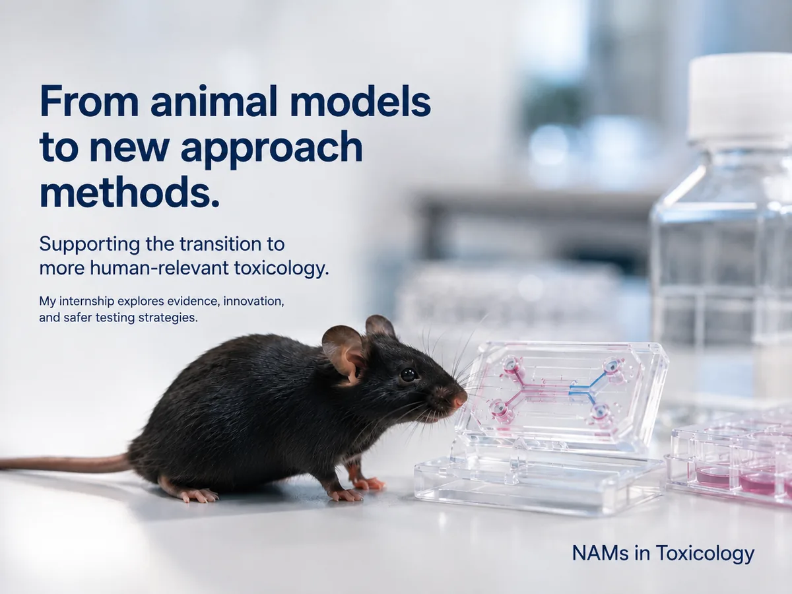

From scientific promise to regulatory use
New Approach Methodologies (NAMs) are transforming toxicological safety assessment. They include in vitro, in chemico, in silico, ex vivo and integrated approaches that can provide information about chemical hazards and risks while reducing or replacing reliance on traditional animal testing.
Developing a scientifically promising method, however, does not automatically lead to its use in regulatory decision-making. Methods may need to pass through several stages of validation, standardisation, independent review and regulatory evaluation, and progress can differ substantially between toxicological endpoints and types of NAMs.
This research project investigates these pathways.

From established animal models to new approaches
NAMs can provide mechanistic and human-relevant evidence while helping to reduce reliance on traditional animal testing. This project examines how that scientific promise translates into regulatory pathways.
Validation pathways and regulatory outcomes
This project examines the validation pathways and regulatory outcomes of New Approach Methodologies using data from the European Commission Joint Research Centre's Tracking System for Alternative Methods towards Regulatory Acceptance (TSAR).
TSAR contains information on alternative test methods that have entered formal validation and regulatory consideration processes. By systematically analysing these records, this project aims to understand not only which NAMs are being developed, but also how far they have progressed towards regulatory acceptance and what may influence that progression.
The research forms part of a Master's thesis in Health & Environment – Toxicology at Utrecht University.
From scientific development to regulatory use
A NAM may be scientifically innovative without yet being ready for regulatory application.
Progress towards regulatory use can depend on many factors, including:
- the type of method
- the toxicological endpoint being addressed
- the availability of a clear and reproducible protocol
- the quality and extent of validation evidence
- the intended context of use
- independent scientific review
- involvement of relevant stakeholders
- standardisation and international harmonisation
- regulatory requirements and acceptance processes
The project therefore distinguishes between method development, validation, regulatory acceptance and implementation rather than treating them as a single process.
Method development
Scientific design, protocol optimisation and applicability domain definition.
Validation
Formal assessment of reliability, reproducibility and toxicological relevance.
Peer review
Independent scientific scrutiny and validation body review opinions.
Regulatory evaluation
Appraisal by regulatory authorities for specific decision-making contexts.
Guideline / regulatory acceptance
Formal inclusion in OECD Test Guidelines or jurisdictional regulatory standards.
Regulatory use
Routine deployment in risk assessments, classification and dossier filings.
What does this project investigate?
How do TSAR-listed NAMs and related alternative test methods differ in their validation characteristics and regulatory outcomes across method types and toxicological endpoints?
Five areas of inquiry
These questions guide the descriptive analyses, comparison of method categories and the case study of progression beyond TSAR and route choice.
Distribution of methods
How are TSAR-listed NAMs and related alternative test methods distributed across methodological domains, toxicological endpoints, validation stages and regulatory statuses?
Evidence and progression
What types of scientific and regulatory evidence are associated with methods that have progressed towards regulatory acceptance?
Barriers to acceptance
Which scientific, technical and regulatory barriers are reported for methods that have not achieved regulatory acceptance or remain under validation or review?
Differences by method category
How do validation pathways and regulatory outcomes differ between in vitro, in silico, in chemico, ex vivo and integrated approaches?
Progression beyond TSAR and route choice
How do selected TSAR-listed methods progress through alternative or parallel pathways, and what evidence explains the choice of route, stakeholder involvement and regulatory outcomes?
Progression beyond TSAR: why methods follow other routes
The case study examines how TSAR-listed methods continue to develop beyond the pathway or status recorded in TSAR, and why developers and other stakeholders pursue alternative or parallel routes towards regulatory use. It complements the database analysis by reconstructing selected method histories and examining the decisions behind their progression.
Why look beyond the recorded pathway?
TSAR is a tracking system, rather than an approval route in its own right. A record describes the activities and milestones documented for a method, but does not necessarily capture its complete history across institutions, jurisdictions or later developments. The case study therefore distinguishes between a pathway ending within the recorded process and development or regulatory progression ending altogether.
A status such as Stopped may require additional context: the recorded submission process may have ended while validation, standardisation or assessment continued elsewhere. Equally, a discrepancy between TSAR and an external source may reflect a later update, a different version of the method or a different intended use. These possibilities need to be checked before interpreting a method as having progressed, failed or changed routes. The Data Guide explains this interpretive issue in more detail.
What counts as progression outside TSAR?
The study separates further scientific development, additional validation evidence, independent review, international standardisation, acceptance for a specified use and implementation in practice. A new publication or commercial service can demonstrate continued activity; it does not by itself establish regulatory acceptance. Likewise, an adopted guideline and documented use in a regulatory assessment represent different milestones.
Relevant pathways can include the OECD Test Guidelines Programme, which develops internationally standardised methods for chemical safety testing; EMA qualification of novel methodologies, which evaluates acceptability for a specific use in medicine development; and assessment within an Integrated Approach to Testing and Assessment (IATA), which combines evidence to address a defined regulatory question. These examples have different purposes and outcomes; they are not interchangeable approvals, and not every route is relevant to every method.
Why might another route be chosen?
The case study explores the following possible influences on route choice. They are questions for investigation, rather than established explanations for the selected methods:
- Fit with the intended use. A method may be developed for a particular chemical class, product sector, jurisdiction or decision. A route focused on that application may be more relevant than seeking broad acceptance as a replacement test.
- International recognition. Developers may seek an internationally harmonised protocol and wider usability of the resulting data. OECD standardisation can support this aim, although the sufficiency of the evidence for a particular regulatory requirement still needs assessment.
- Role within an evidence package. A method may provide mechanistic or supporting information as part of an integrated assessment, rather than answering an entire regulatory endpoint on its own. The evidence needed should be interpreted in relation to that role.
- Readiness, priorities and institutional capacity. The available validation evidence, regulatory demand and access to assessment processes may influence which route is feasible. EURL ECVAM explicitly considers regulatory relevance, prioritisation and available capacity when assessing submissions; see its submission process.
- Resources and stakeholder coordination. Funding, time, access to laboratories, collaboration and the burden of pursuing parallel submissions are possible influences to examine where method-specific evidence is available. A change in route alone cannot establish any of these motives.
How the case study will interpret the evidence
The analysis aims to build a dated account of the selected methods, connecting the TSAR record to external validation reports, review opinions, guideline documents and regulatory decisions. It asks what changed, which actors were involved, what evidence was required and whether later milestones concern the same method version and context of use.
Documented events and documented motives will be kept distinct. A missing submission may explain why a recorded process ended without explaining why the developer did not submit. Where a reason for route choice is not established by the available evidence, it will remain unknown or be presented explicitly as a possible explanation. This allows the case study to place TSAR outcomes in their broader context without treating an alternative route as proof of an easier process, reduced scrutiny or regulatory success.
Investigate the TSAR-listed methods
This dashboard makes the project database easier to explore across six connected dimensions.
Method type
Explore in vitro, in silico, in chemico, ex vivo and integrated approaches.
Toxicological endpoint
Compare areas such as eye irritation, skin irritation, sensitisation and more complex systemic toxicity endpoints.
Validation pathway
See where methods are positioned within the validation and assessment process.
Derived regulatory status
Explore differences in derived regulatory progression and outcomes between methods in this research dataset.
Workflow stage
Follow methods across the different stages recorded within TSAR.
Stakeholders and organisations
Explore the organisations and actors involved in method submission, validation, review and regulatory consideration.
Why the transition matters
Regulatory acceptance determines whether innovative evidence can support real safety decisions. Understanding where methods progress—or stall—helps reveal where validation, guidance and coordination may be needed.
Why does regulatory acceptance matter?
NAMs have the potential to make toxicological assessment more human-relevant, mechanistically informative, efficient and less dependent on animal testing.
Their impact ultimately depends on whether scientifically useful methods can be translated into approaches that regulators can confidently use for specific decisions.
Understanding why some methods progress further than others can help identify where additional evidence, validation, standardisation, coordination or regulatory guidance may be needed.
By making these patterns visible, this project aims to contribute to a clearer understanding of the transition from scientific innovation to regulatory application.
Tracking System for Alternative Methods towards Regulatory Acceptance
TSAR is maintained by the European Commission's Joint Research Centre. It provides structured information about alternative methods that have entered formal validation and regulatory consideration pathways, including their endpoints, method characteristics, workflow stages and regulatory progress.
This project uses TSAR as the core data source and combines its structured records with researcher verification and supporting scientific and regulatory literature to investigate broader patterns in NAM validation and regulatory acceptance.